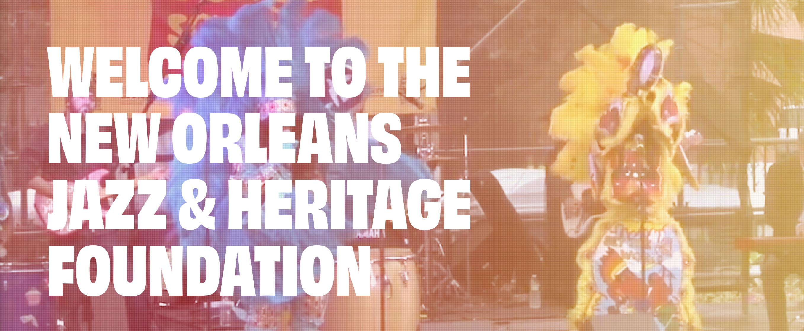
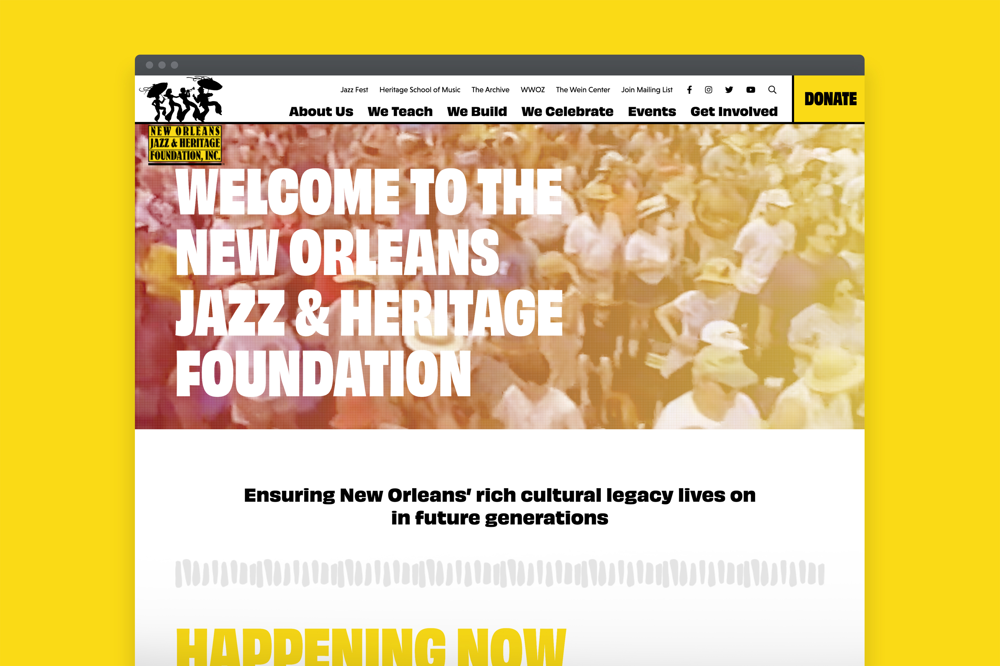
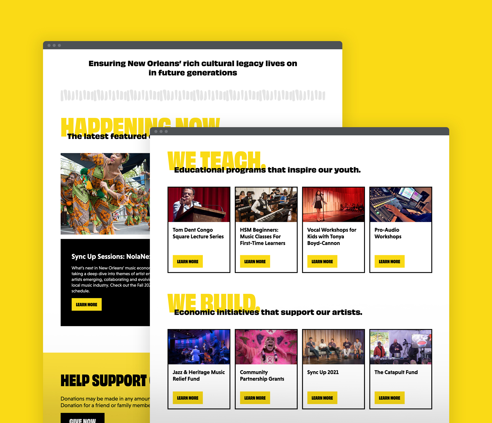
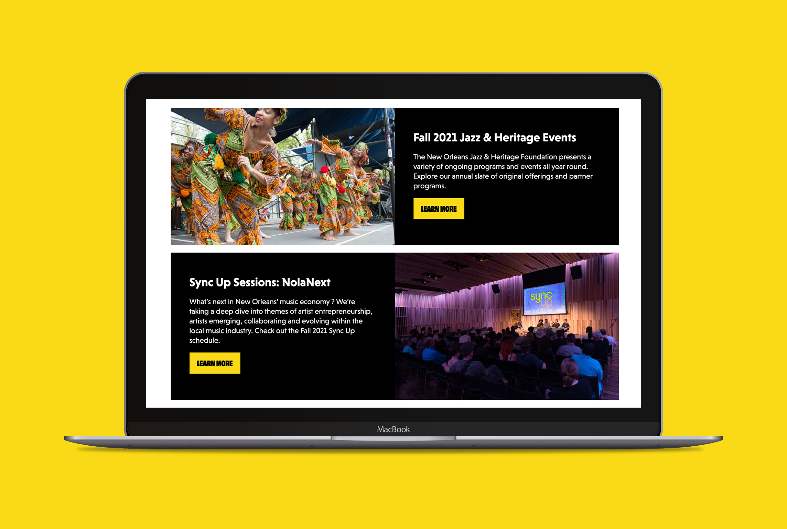
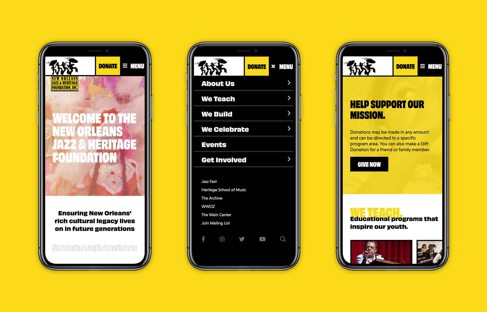
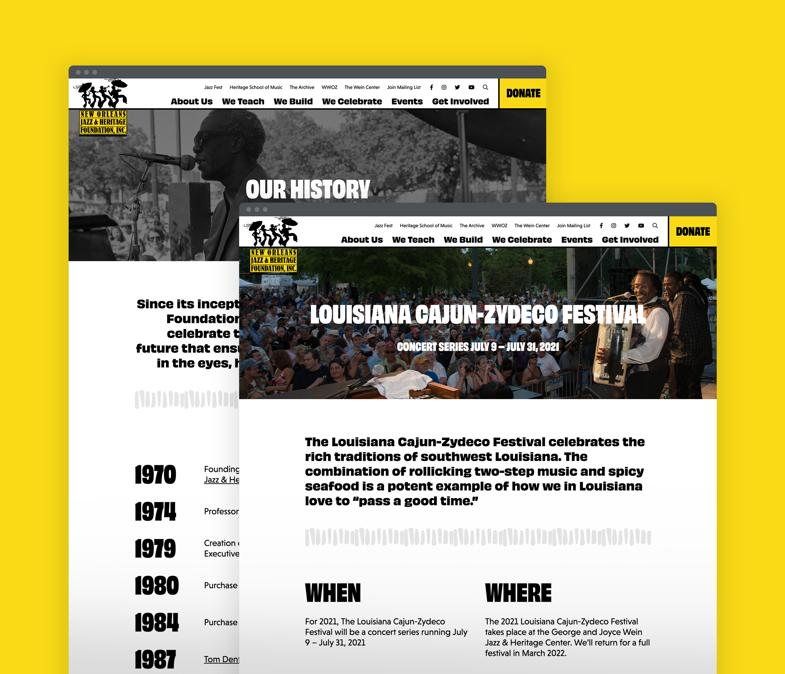

New Orleans Jazz & Heritage Foundation
A showstopping website for an iconic music, arts, and culture foundation.


The New Orleans Jazz & Heritage Foundation is a cultural institution in the local music community. Its roots began with the famous New Orleans Jazz & Heritage Festival and has grown to become a foundation for music education, artist support, and culture preservation. I redesigned their website to showcase their offerings, programs, events, and legacies. The minimal color palette paired with bold typography, shifting between narrow and extended weights, creates a dynamic, rhythmic movement that celebrates the musical, artistic, and cultural communities.
- Client
- The New Orleans Jazz & Heritage Festival and Foundation, Inc.
- Agency
- Deep Fried Advertising
- Active
- 2021
- Role
- Lead Designer
- Work
-
- UX Strategy
- Website Design



